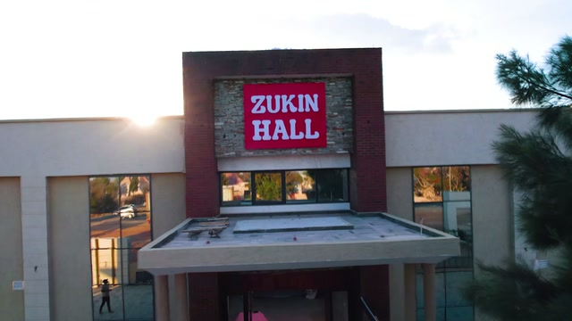
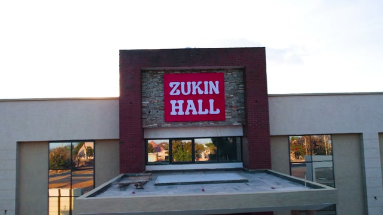
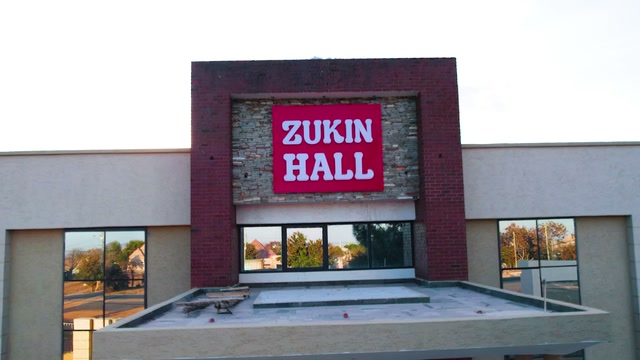

Addendum F: the tags must read E…E, T, I…I, with a single crossing of the doorway and no exterior frame after it.



Interior 18.84s of 28.88s = 65.2% of footage (target ≥65%). The walk-in is one uncut take listed in three rows only to show where it crosses the threshold — it is never cut there.
| # | Shot | Start | End | Len | Where | Why |
|---|---|---|---|---|---|---|
| 1 | front_view | 17.40 | 18.00 | 0.60 | E EXTERIOR | frame 1 = the chosen front view |
| 2 | aerial_orbit | 9.45 | 11.75 | 2.30 | E EXTERIOR | overview of the whole compound |
| 3 | side_view | 4.96 | 6.20 | 1.24 | E EXTERIOR | ground, the building's flank |
| 4 | ground_approach | 12.95 | 15.15 | 2.20 | E EXTERIOR | walking across the yard |
| 5 | walkin_ext | 16.90 | 20.20 | 3.30 | E EXTERIOR | facade -> sign -> canopy -> doors |
| 6 | walkin_cross | 20.20 | 20.60 | 0.40 | T THRESHOLD | crossing the wooden doors (uncut) |
| 7 | walkin_int | 20.60 | 27.24 | 6.64 | I INTERIOR | lobby -> arch -> aisle -> hall (uncut) |
| 8 | hall_wide | 27.24 | 29.68 | 2.44 | I INTERIOR | the hall, tables laid |
| 9 | tables | 30.72 | 32.36 | 1.64 | I INTERIOR | charger plate, napkin, glasses |
| 10 | ceiling | 37.36 | 40.92 | 3.56 | I INTERIOR | chandelier and hanging flowers |
| 11 | stage | 40.92 | 43.84 | 2.92 | I INTERIOR | stage, gold sofa, flower walls |
| 12 | aisle | 46.16 | 47.80 | 1.64 | I INTERIOR | aisle arch — journey ends here |
| # | Frame | Where | Camera position |
|---|---|---|---|
| 1 | | E EXTERIOR | facade + sign, oblique, backlit |
| 2 | | E EXTERIOR | facade + sign, 3/4 view, canopy |
| 3 | | E EXTERIOR | aerial, side building, paved yard |
| 4 | | E EXTERIOR | aerial, side building, parked truck |
| 5 | | E EXTERIOR | ground, side view, brick tower + entrance |
| 6 | | E EXTERIOR | aerial, straight-on entrance, green lawn |
| 7 | | E EXTERIOR | aerial oblique, whole compound |
| 8 | | E EXTERIOR | aerial orbit, whole compound |
| 9 | | E EXTERIOR | ground approach across the yard |
| 10 | | E EXTERIOR | ground, through the gate, tree blocks the view |
| 11 | | M MIXED | walk-in: facade -> doors (E) -> crossing (T) -> hall (I) |
| 12 | | I INTERIOR | hall wide, tables laid |
| 13 | | I INTERIOR | hall wide, ceiling lights |
| 14 | | I INTERIOR | table setting, charger plate, napkin |
| 15 | | I INTERIOR | table setting detail, glasses |
| 16 | | I INTERIOR | stage, gold sofa |
| 17 | | I INTERIOR | stage, closer |
| 18 | | I INTERIOR | ceiling, chandelier + hanging flowers |
| 19 | | I INTERIOR | stage, gold sofa, flower walls |
| 20 | | I INTERIOR | stage wide, flowers in foreground |
| 21 | | I INTERIOR | aisle, arch, walkway |
| 22 | | E EXTERIOR | aerial, whole compound |
| 23 | | E EXTERIOR | aerial, fades to black |